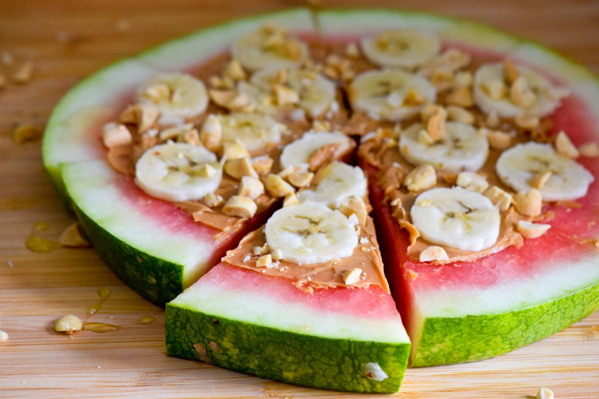

Cold Watermelon Pizza

Description
"Cold Watermelon Pizza" is a refreshing and playful take on dessert pizzas,
perfect for summer days. This recipe begins with a thick slice of chilled watermelon, serving as a juicy,
sweet base reminiscent of traditional pizza crust. The watermelon is then generously spread with creamy peanut butter,
offering a rich, nutty layer that perfectly complements the fruit's crisp sweetness. Thinly sliced bananas are arranged
atop the peanut butter layer, adding a soft, mellow sweetness that marries well with the other flavors.
For an extra touch of indulgence, a drizzle of honey and a sprinkle of granola add a delightful crunch and
natural sweetness. This no-bake dessert is not only visually vibrant and appealing but also provides a healthful
twist with its combination of fresh fruit, protein-rich peanut butter, and wholesome toppings.
"Cold Watermelon Pizza" is a fun, easy-to-make treat that's sure to be a hit at any gathering or
as a novel dessert for family meals.
Ingredients
- Large Watermelon Slice - 1 inch thick, cut in a circular shape
- Creamy Peanut Butter - 1/2 cup
- Bananas - 2, thinly sliced
- Honey - for drizzling
- Granola - 1/4 cup
- Shredded Coconut - 2 tablespoons (optional)
- Fresh Mint Leaves - for garnish (optional)
- Dark Chocolate Chips - 2 tablespoons (optional)
Steps
- Cut a large, 1-inch thick slice of watermelon from the center to create a circular 'pizza' base.
- Gently pat the watermelon slice with paper towels to remove excess moisture.
- Evenly spread the creamy peanut butter over the surface of the watermelon slice, leaving a small border around the edges.
- Place thinly sliced bananas in a single layer over the peanut butter.
- Drizzle honey over the bananas for added sweetness.
- Sprinkle granola evenly over the pizza.
- If using, add shredded coconut and dark chocolate chips for extra flavor and texture.
- Place the watermelon pizza in the refrigerator to chill for about 15-20 minutes. This step helps to solidify the toppings and makes the pizza easier to slice.
- Before serving, garnish with fresh mint leaves for a refreshing aroma and visual appeal.
- Use a sharp knife or pizza cutter to slice the watermelon pizza into individual serving sizes.
- Serve immediately and enjoy this unique and refreshing treat.
Wanna get back to check another recipes?
Click here!